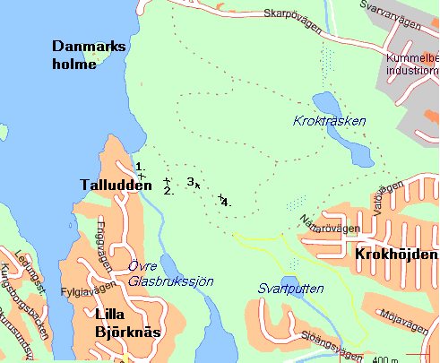
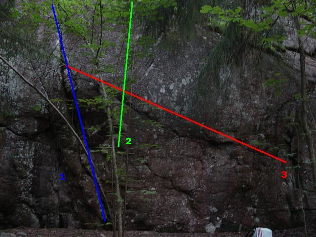

GPS: 59.333548,18.224269
Överhängande bouldering. Ligger nära
Talludden
sportklätterklippa.
Överhängande Väggen med bil
Kör Värmdöleden (222) och sväng av via Skuru (direkt efter Skurubron). Sväng till vänster och kör under Motorvägen. Du ser Björknäs C. Sväng höger och sedan första vänster mot Talludden (på Talluddsvägen). Kör rakt fram en stund sedan Höger (Helmdalsvägen), Vänster (Friggvägen), höger (Emblavägen). Nära slutet av Emblavägen finns det en vänd/parkerings plats. Parkera bilen där och följ sedan Mariedalsvägen ner. Först ser man "Parkeringsväggen" och några meter senare delar av "Överhängande Väggen" på högra sidan.
Överhängande Väggen med buss
Antingen tar man buss till Björknäs C från Slussen (ca 15 min och det finns massor med bussar att välja på) eller så tar man 413 till Talludden. Gå samma väg som bilvägen. Från Björknäs C tar det ca 20 min att gå (2 km) och åker man 413 tar det ca 10 min från bussen.
Warm Up Väggen med bil
Kör Värmdöleden (222) och sväng av mot Orminge. Kör vidare mot Orminge Center.
Följande väggar finns i området
Obs: Inte alla väggar är med än!
Fina väggar som är delvis rätt överhängande med fina problem.
Sur Fredde extension (2) & Orminge/Hugo|Hugo (4) finns beskrivna Orminge#Mellandelen_.28v.C3.A4nstra.29|ovan
Finns numera en trv. som börjar med sittstart upp vid areten i slutet av Hugo, trv. Hugo höger-vänster och avslutar med Televinken. fa=Daniel J.L. Namn:? Grad:?
Väggen är vid den lilla vändplan till vänster av Mariedalsvägen.
1. "Slipps", 6b sd.; Stefan Kolmodin; Sittstarta med händerna på tydliga bra grepp, catcha stor sloper, matcha denna och skicka vidare till pinch, följ sedan kanten upp till samma slut som Allroad. Den mossiga blockiga delen till höger ingår ej. 2. "Allroad", 7a+ sd.; Stefan Kolmodin; Sittstarta med händerna på ”bra” pinchlist, via en mängd små grepp till tydligt slut på bra jug snett uppåt höger. ?. "Trollmor", 6c+; Niklas Adler; Travers from vänster till höger, med start inne i "grotta" (kan vara blött), ett par tunga flytt snätt upp höger, fortsätt förbi branta parti (ryggen nära marken), och avsluta med tunna litor på seperat vägg th. (Går ng på denna vägg men vet inte riktig vart än)
1. "Black Flag", 6b+ sd.; Stefan Kolmodin; Sittstarta under tydligt svart arete, skicka till jugar ovanpå denna, upp med fötterna och catcha kanten rakt upp, sedan lätt vidare till samma slutjug som Fluga. 2. "Butthole Surfer", 6b sd.; Stefan Kolmodin; Sittstart 2m till höger om Black Flag, följ rampen snett uppåt vänster till samma slutjug som -Fluga och Black Flag. 3. "Ballabonk", 7a sd.; Stefan Kolmodin; Starta som Butthole Surfer men klättra rakt upp via bra sideclings, sträck ut till undercling till höger jobba upp fötterna och skicka till gastonkloss, matcha denna och skicka vidare till superjug. Hög, lite läskig landning. 4. "Fluga", 6b+ sd.; Stefan Kolmodin; Sittstarta under den bulliga areten, via tydliga gastons till mikrolist, smek över kroppen åt höger och avsluta på tydlig jug snett uppåt höger.
1. "Trevor´s odöpta", 6c sd.; Trevor Cooper-Williams; Sittstarta med händerna i taket (2 tydliga Grepp), skicka till slopig grepp, via små listhål och avsluta på kanten. 2. "Shrek", 5b sd.; Misse; Sittstarta med händerna på tydlig juglist, rakt upp via bra gastons till slutjug. 2a. "Shrek Air",6b sd.; Misse; Som Shrek men catcha direkt från startgrepp till slutjug. 3. "Misse’s odöpta", 6c sd.; Misse; Sittstarta under rödaktig kant/arete med händerna på små sideclings, skicka till liten gaston sedan vidare till bra grepp. 4. "Censor", 6b sd.; Fröberg; På det lilla fristående blocket, knöla in dig under taket, starta med höger hand i sprickan och vänster hand på slopig hylla. Etablera, skicka upp till kant och mantla. 5. "Valbiff", 6b sd.; Westerlund; På det lilla fristående blocket, sittstarta areten och toppa ut rakt upp.
Liten vägg som kanske har lite problem över att göra.
1.”Brian´s Spricka”, ? Sd.??; Brian; 2.”Så jävla kåt på Ricky Lake”,7a(+) ståstart; Jakob Andrén; Följe pile upp 3.”Mondo Generator”,6c ståstart; Misse; Starta på juggen och trv. till juggen.
Kan vara lite svår hittat. Crimpig!
1. ”Lost possibilities of youth”,6a ståstart; Misse; Inne i grooven, går lite till vänster i slutet 2. ”??”,4 ståstart ; Misse; sikta mot 2 stora hål.
1. ”Den onda fågeln”,6a+ ; Linda Johansson; ståstart 2. ”Den onda fågeln”,6c+ sd. ; Misse; 3. ”Spineless”,7b+ ståstart; Linda Johansson; Markerad med pil, lite till höger 4. ”LustMord”,7a+ ståstart ; Misse; Markerad med pil, lite åt höger
En liten vägg som har ett fåtal lättare problem som man kan göra olika varianter av.
1.”Nakka´s most Wanted”,5 sd.; Misse; Rakt upp 2. “Orminge Stajlii”,6a sd. ; Misse; Starta med Crimperna sedan rakt upp
1. ”Boo Gangsta”, 5 sd. ;Misse; Börja på juggen sedan upp till vänster. 2. ”John´s Problem", 5 sd.; Misse; Börja i tvärsprickan och rakt upp.
Kategori:Överhäng
Kategori:Stockholm
Kategori:Nacka-Värmdö
Kategori:Saknar ledmall
Copyright (C) Permission is granted to copy, distribute and/or modify this document under the terms of the GNU Free Documentation License, Version 1.3